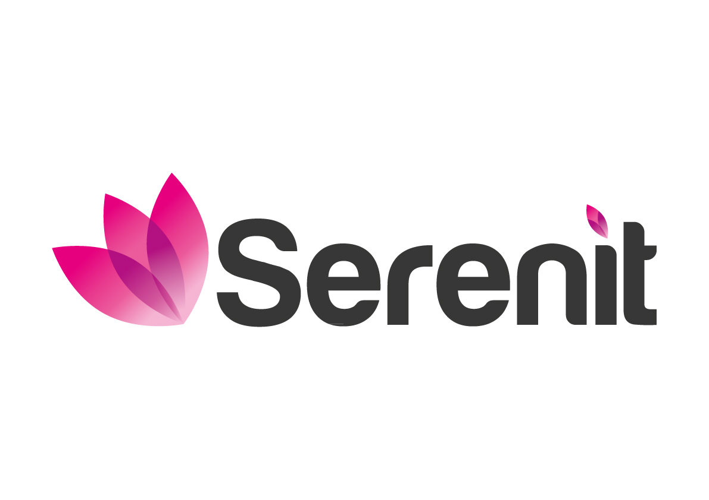

Bram Peters
Senior Data-/BI‑Specialist and Product Designer | MSc Human‑Technology Interaction
| UX, UI & Interaction Design & Research
Contact Me
bramapeters@outlook.com
Amsterdam, Netherlands
bram‑peters.com
LinkedIn
About Me
Graduated MSc Human‑Technology Interaction-engineer and Senior Data‑/BI‑Advisor at the Dutch Employee Insurance Agency (UWV), I specialize in creating intuitive, data‑driven solutions with organizational and societal impact. From stakeholder research and conceptual design to prototyping and technical implementation, including designing ETL pipelines, setting up backend infrastructures and developing frontend solutions, I take ownership in what I do up until final release. I thrive in agile, multidisciplinary teams, so let's collaborate and build something unique together!
Bram
Professional Experience
-
 Owner/Founder, Lost In Translation™ – Amsterdam, Netherlands
(Sep 2025 – Present)
I founded Lost In Translation™, a design-led e-commerce brand where dysfunctional AI travel
assistants “run the office” and transform metro and city maps into premium posters with gloriously
wrong translations. With identity branding, strong storytelling, and tailored customization at its
core — powered by cutting-edge technical innovation. Maps so wrong, they feel just right. Follow us on
lostintranslation.nl!
Owner/Founder, Lost In Translation™ – Amsterdam, Netherlands
(Sep 2025 – Present)
I founded Lost In Translation™, a design-led e-commerce brand where dysfunctional AI travel
assistants “run the office” and transform metro and city maps into premium posters with gloriously
wrong translations. With identity branding, strong storytelling, and tailored customization at its
core — powered by cutting-edge technical innovation. Maps so wrong, they feel just right. Follow us on
lostintranslation.nl!
-
 Senior BI Advisor & Product Designer, UWV SMZ – Amsterdam, Netherlands (Jul 2025 –
Present)
Leading development of business intelligence data products within the Division of Social‑Medical
Affairs. Responsible for ETL pipelines (SQL, SSIS/SSAS, Oracle), integrating external data sources, and
advanced DAX modeling. Designed Power BI dashboards tailored to government services in accordance with
Dutch
social security legislation.
Senior BI Advisor & Product Designer, UWV SMZ – Amsterdam, Netherlands (Jul 2025 –
Present)
Leading development of business intelligence data products within the Division of Social‑Medical
Affairs. Responsible for ETL pipelines (SQL, SSIS/SSAS, Oracle), integrating external data sources, and
advanced DAX modeling. Designed Power BI dashboards tailored to government services in accordance with
Dutch
social security legislation.
-
Data Analyst & BI Specialist, UWV SMZ – Amsterdam, Netherlands (Aug 2024 – Jul 2025)
(Jul 2025 –
Present)
Built and optimized data pipelines and analytics dashboards. Transformed business requirements into
data models and managed integration between multiple agency data sources and internal BI tools for a range
of stakeholders.
-

Data/BI Specialist, SerenIT – Amsterdam, Netherlands (Jan 2024 – Aug 2024) Delivered custom dashboards and reporting tools to public and private clients. Led stakeholder workshops, defined KPIs, built DAX measures and SQL‑based backend queries for data‑driven insights. -
 Master Thesis Project · TU/e
Security Office – strong>Eindhoven, Netherlands (Dec 2022 – Oct 2023)
Designed and implemented a student dashboard to support self‑regulated learning. Conducted user
research, defined requirements with university security officers, iterated wireframes, and implemented
the tool using Power BI and UX methodologies.
Master Thesis Project · TU/e
Security Office – strong>Eindhoven, Netherlands (Dec 2022 – Oct 2023)
Designed and implemented a student dashboard to support self‑regulated learning. Conducted user
research, defined requirements with university security officers, iterated wireframes, and implemented
the tool using Power BI and UX methodologies.
-
Frontend Developer, TU/e –
Eindhoven, Netherlands (Dec 2022 – Oct 2023)
Built modular front‑end components (React/Vue) integrated with Typo3, SharePoint, and educational
portals. Supported cross‑team development on internal tools.
-
 UX Designer & Android Developer,
Blue Jay – Eindhoven, Netherland (Jun 2018 – Jun 2020)
Designed a healthcare‑oriented drone interface and mobile app. Played a full role in UX research,
iterative testing and final app delivery, including voice recognition features and mood‑sensitive
lighting. Worked in an Agile team using Scrum.
UX Designer & Android Developer,
Blue Jay – Eindhoven, Netherland (Jun 2018 – Jun 2020)
Designed a healthcare‑oriented drone interface and mobile app. Played a full role in UX research,
iterative testing and final app delivery, including voice recognition features and mood‑sensitive
lighting. Worked in an Agile team using Scrum.
Education
- MSc Human‑Technology Interaction
TU/e – Eindhoven, Netherlands - Erasmus MSc Computer Science
KTH – Stockholm, Sweden - Erasmus MSc Interactive Media Technology
KTH – Stockholm, Sweden - BSc Psychology & Technology
TU/e – Eindhoven, Netherlands
Languages
-
Dutch
Native
-
English
Near-native | Professional
-
Swedish
Convesational


Certificates
- Python for Data Science & Engineering – IBM (2025)
- UX Design – Google (2025)
- Advanced BI Developer – Computrain (2024)
- Advanced SQL Programmer – Computrain (2024)
Portfolio Highlights
- Lost In Translation™ | Global Transit, Local
Nonsense™
I created a design-driven travel agency webshop for custom-tailered, gloriously inaccurate and personality-driven metro- and city maps. Powered by personalized-AI, an engaging UX with brand-focused storytelling at its foundation, backed-up by cutting-edge innovation. By whom? One of our questionably qualified AI-travel assistants. Are they professional? No. Entertaining? Absolutely. Keep an eye out on lostintranslation.nl! - TU/e Student Dashboard
I designed and validated a Canvas-integrated student dashboard that supports self-regulated learning. The project was tested through scientific A/B-studies in the Human-Technology Interaction context at TU/e. - Blue Jay – The ‘Emotional’ Drone
I co-designed and developed a healthcare drone with intuitive interfaces such as dynamic lighting and expressive LCD “eyes.” I also built an Android app for real-time tracking, emergency detection, and voice control. - Doula | UX/UI Case Study
I completed a 10-hour UX/UI case study to redesign an outdated pregnancy app. Through user research and usability testing, I identified pain points and transformed both the visual design and overall user experience. - Rasperries Shopping Assistant
I designed a shopping assistant concept that empowers customers to choose when to receive help, reducing stress in crowded retail environments and improving accessibility for introverted shoppers. - Reimagining Spotify Podcasts
At KTH, I worked on revamping Spotify’s podcast section using the Double Diamond framework. I conducted user research, defined key challenges, and prototyped solutions that improved navigation, community features, and content discovery.
Skills
-
Business Intelligence | Advanced Power BI service & governance, DAX modeling, RLS/OLS, SSIS/SSAS, Azure Data Factory, data quality & lineage, GDPR-compliant reporting, policy-driven KPIs, performance tuning, paginated reports, stakeholder-ready dashboards for agencies
- BI & Data Analytics | ExpertPower BI, DAX, SQL, Oracle, Azure, SSIS/SSAS, ETL, data mining & modeling, advanced analytics
- UX/UI & Interaction Design | AdvancedFigma, Adobe XD, wireframing, prototyping, usability testing, user flows, cognitive walkthroughs, design systems
- Frontend Development | ProficientHTML, CSS, JavaScript, TypeScript, React, Vue.js, Kotlin (Android), REST API integration
- Cognitive & Behavioral Insight | AdvancedBehavioral research methods, human cognition & perception, human‑robot interaction, persuasive & ethical design
- Research & Methodology | ExpertUser research, stakeholder interviews, Double Diamond, self‑regulated learning theory, storytelling, A/B testing
- Tools & Platforms | ProficientSharePoint, Typo3, Git, Microsoft Azure, Power Automate, JIRA, Confluence, Databricks
- Agile & Scrum Delivery | IntermediateSprint planning, backlog refinement, iterative development, stakeholder management, cross‑functional teamwork, demos & presentations, user stories
-
Project Start-Up & Stakeholder Management | Advanced Discovery → scoping → kickoff, stakeholder mapping & RACI, requirements elicitation, risk/RAID logs, delivery roadmap & milestones, change management & comms plans, workshop facilitation, exec updates, cross-functional alignment